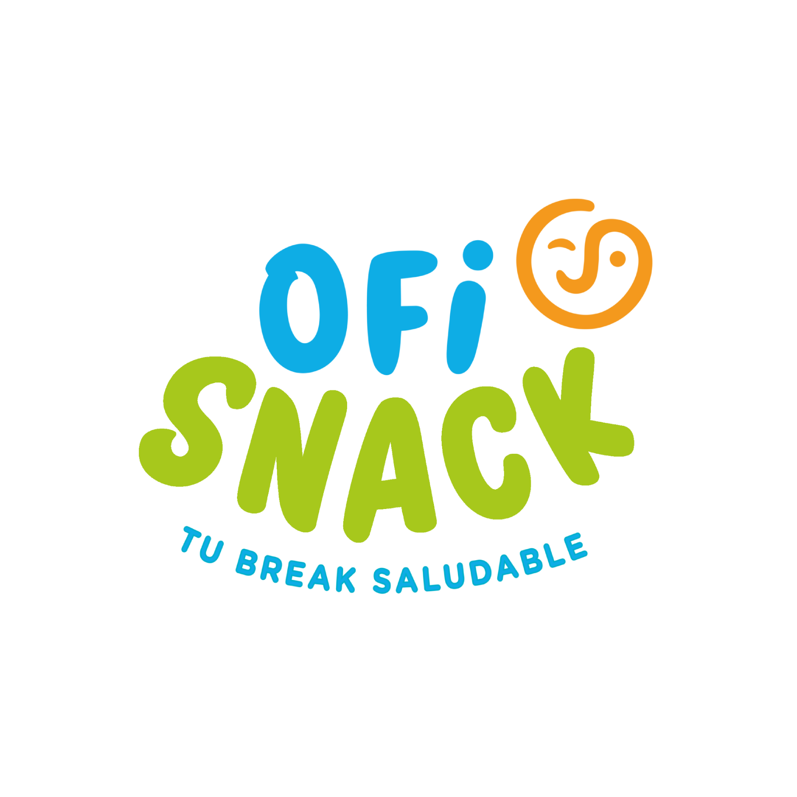

Calculá la cantidad ideal de snacks y boxes para cada empresa.
Colaboradores
Días por semana
De 0 a 5
Snacks por persona/día
Ej.: 1 · 1,5 · 2 · 2,5
Por semana
3 días
150
snacks necesarios
BOXES RECOMENDADOS
Por mes
12 días
600
snacks necesarios
BOXES RECOMENDADOS